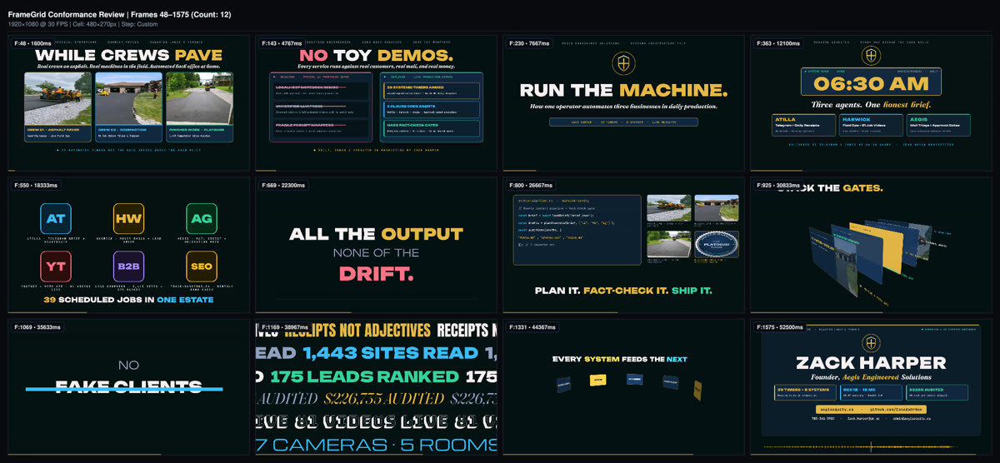

Framefields WebGPU & Hybrid Wan 2.2 I2V
Technical studios evaluate editorial judgment, timing, and production reliability, not raw tool clicks. Uncontrolled diffusion produces warping wheels, melting mechanical linkages, and squashed aspect ratios, while naive code-motion lacks musical rhythm and holds.
Two-Track Gated Architecture (PIPELINE.md):
